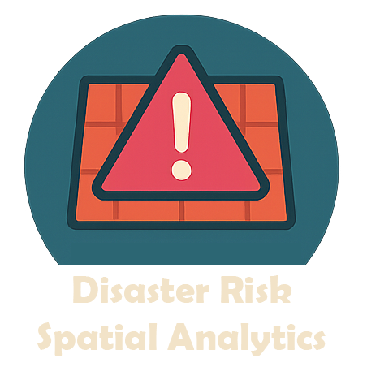
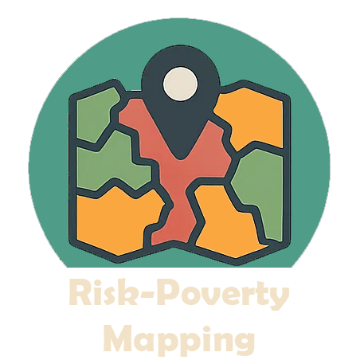
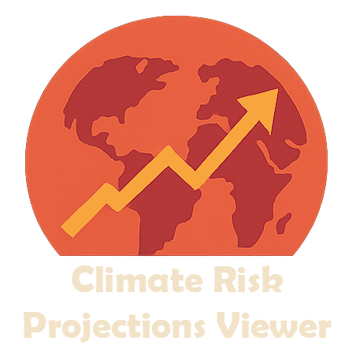
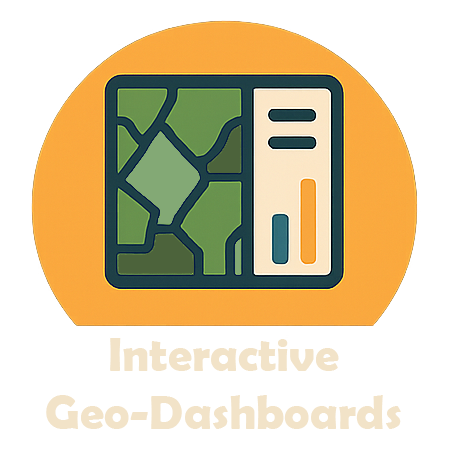

Risk Data Library - Country Climate & Disaster Risk Screening Tools#
This documentation offers guidance on risk screening and provides pythons tools to quickly produce natual hazards’ risk screening at the national or sub-national level. The tools have originally being created for the World Bank’s Country Climate and Development Report risk screening activities (2022/2025) and then furtherly developed within the Risk Data Library project.
What you can do with these tools#

Analyze disaster risk
Perform spatial analytics of disaster risk using globally available datasets.

Map the interaction of risk and poverty
Combine hazard exposure and socio-economic vulnerability to produce bi-variate maps highlighting risk-poverty hotspots.

Explore future climate risk
Generate climate risk outlooks based on CMIP6 climate projections and standardized risk indices.

Build interactive dashboards
Present results in an interactive dashboard format to support communication, exploration, and stakeholder engagement.
Note
If you are a WB user planning to apply these tools for your project, please take a minute to fill in our survey.
Applied globally#
The map shows countries that have been already covered by the risk analytics. Click on the country name to download the risk screening report.
| South & South-East Asia | Africa | Latin America & Caribbean | East Asia and Pacific |
|---|---|---|---|
|
|
|
|
Note
This documentation reflects the approches and methods adopted for the CCDR disaster risk screening following the CCDR guidance note. They are based on the most typical DRM framework, yet there are many alternative approaches that could be adopted for similar purposes. Also note that our tools are not expected to reflect all existing risk perspectives and dimensions, rather producing standardised risk indicators.
The CCDR risk screening tools has been developed in agreement with regional geography and poverty teams, and with the support of the World Bank Global Facility for Disaster Risk and Recovery (GFDRR).
{kind=link}
Disaster risk framework#
In the field of Disaster Risk Management (DRM), Risk (R) is typically calculated as a function of: the hazard occurrence probability and intensity (i.e., physical magnitude) in a particular location (H, for Hazard); the people and physical assets (infrastructure, buildings, crops, etc.) situated in that location and therefore exposed to the hazard (E, for Exposure); and the conditions determined by physical, social, and economic factors which increase the susceptibility of an exposed individual, community, asset or system to the impacts of hazards (V, for Vulnerability).
See also
The UN Global Assessment Report on Disaster Risk Reduction (GAR) is the flagship report of the United Nations on worldwide efforts to reduce disaster risk. The GAR is published by the UN Office for Disaster Risk Reduction (UNDRR), and is the product of the contributions of nations, public and private disaster risk-related science and research, amongst others.